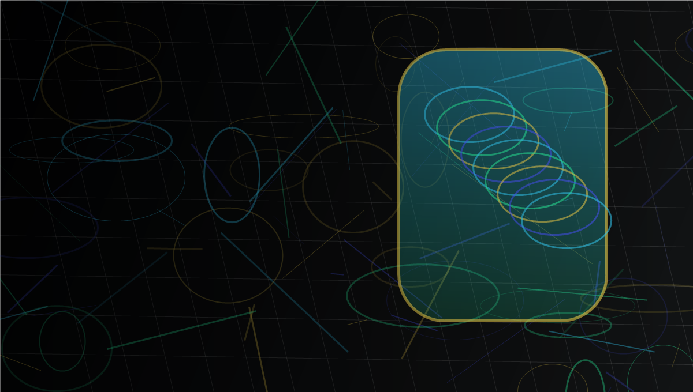
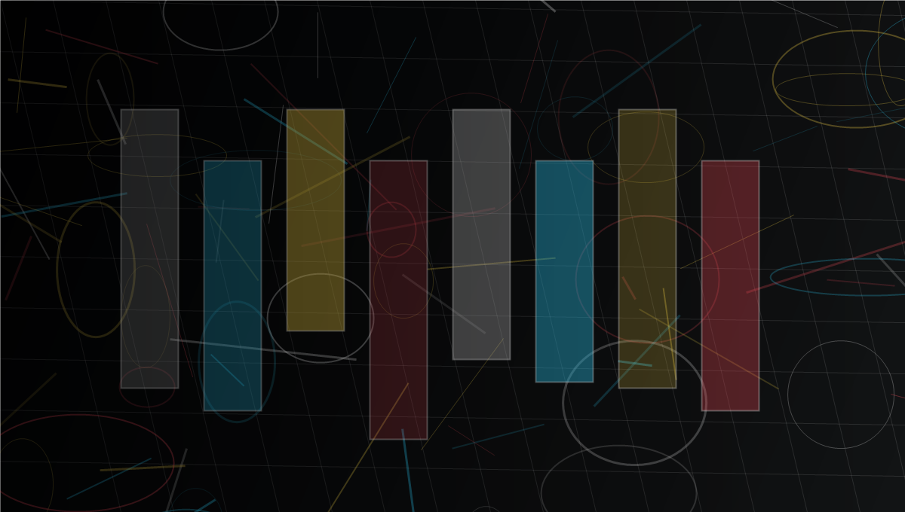
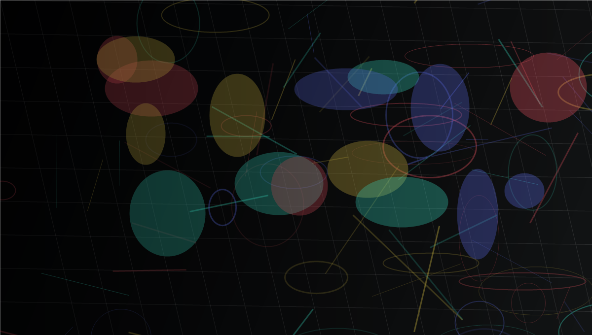
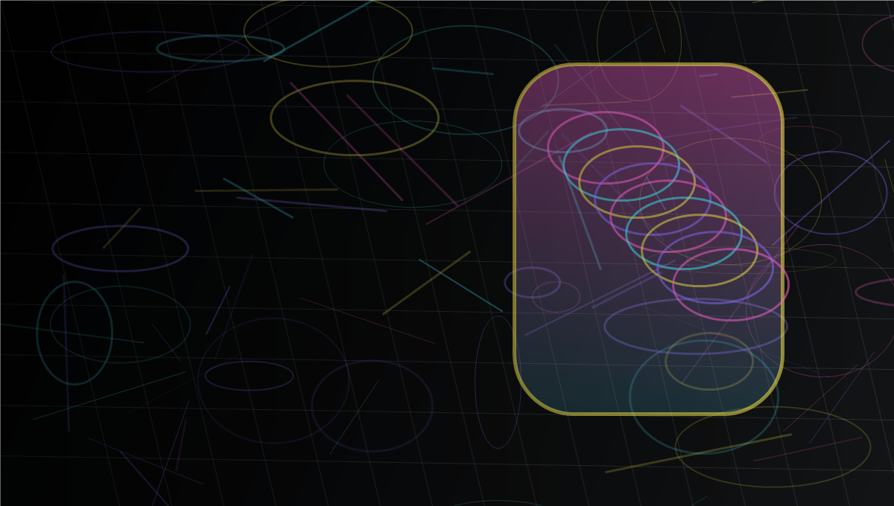
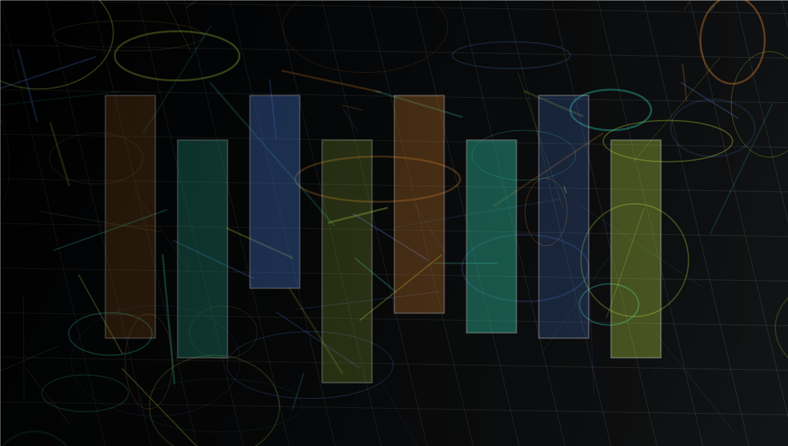
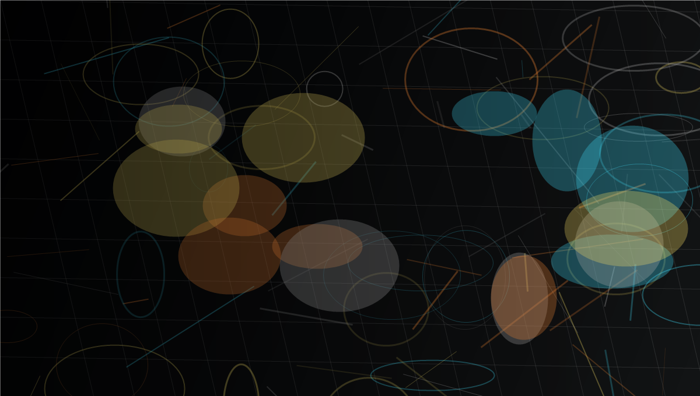
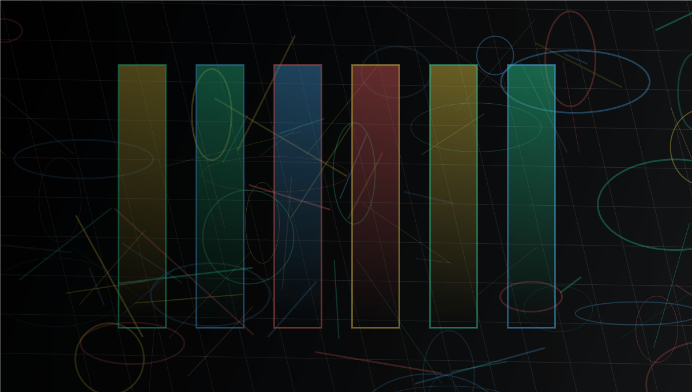
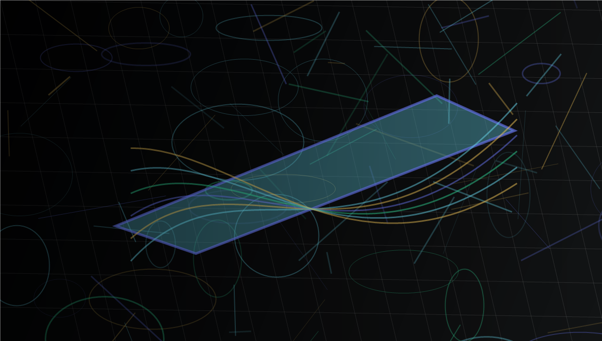

成都劳埃 白皮书 胰岛素泵内部结构 CT 检测用非破坏性三维成像观察组件、装配间隙与微型流道，让医疗器械验证更接近真实内部状态。
共 12 篇白皮书

成都劳埃 白皮书 胰岛素泵内部结构 CT 检测用非破坏性三维成像观察组件、装配间隙与微型流道，让医疗器械验证更接近真实内部状态。
更早发现复合材料、线束、紧固件和装配内部异常，缩短失效分析周期并支撑快速迭代。

成都劳埃 白皮书 面向本地制造的 CT 质量证据把质量判断从多次交接变为共享的可复核证据，帮助研发、供应链和生产团队看到同一个问题。

成都劳埃 白皮书 用工业 CT 降低质量成本减少报废、返工和争议等待，把检测数据转化为可重复的纠正措施和跨周期质量资产。

成都劳埃 白皮书 化妆品包装的 X 射线质量保障面向泵头、瓶盖、密封和灌装结构建立可量化的内部证据，让异常从调查走向行动。
在三维视角下定位空洞、桥连、虚焊和封装错位，帮助电子工程师更快判定根因。
在量产前观察瓶体、盖体、密封和内部异物风险，把高成本召回拦在设计验证阶段。

成都劳埃 白皮书 汽车塑料件内部缺陷检测帮助供应商在孔隙、熔接线、夹杂和装配偏差上建立统一判断标准，兼顾质量、速度和安全。
观察壳体、焊点、电芯和连接结构的隐藏异常，理解小缺陷如何放大为发热与安全风险。

成都劳埃 白皮书 铝压铸孔隙的快速量化分析以三维孔隙率、位置和尺寸数据支持工艺调整，让铸件质量判定更清晰、更经济。

成都劳埃 白皮书 电芯来料验证与测试流程优化为电池集成商建立更快的入厂验证路径，识别极片错位、异物、褶皱和结构偏差。

成都劳埃 白皮书 航空航天关键部件缺陷指南面向高可靠性零部件，评估裂纹、孔隙、夹杂和装配异常，支撑研发验证与供应商质量管理。
没有找到匹配的白皮书。
用工业 CT 检测保护产品声誉、项目进度和制造利润。